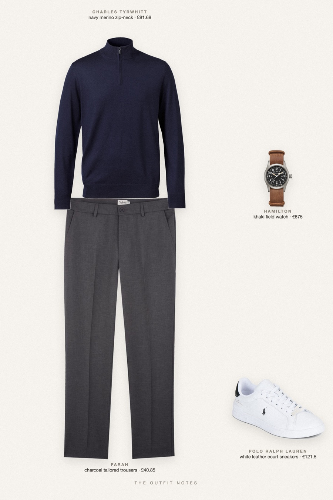
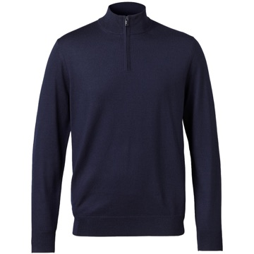
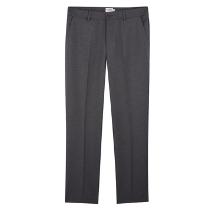

Tarmac Navy
stealth wealth on a private terminal

Succession style men: a navy merino zip-neck jumper from Charles Tyrwhitt over charcoal Farah trousers, clean white Polo Ralph Lauren Heritage Court sneakers and a Hamilton Khaki Field watch. Stealth wealth outfit for men, quiet luxury in unbranded navy and grey, perfect for fall 2026.
The pieces
This page contains affiliate links: if you buy through them, we may earn a commission at no extra cost to you. Disclosure.

Charles Tyrwhitt
Navy merino zip-neck
Shop
Farah
Charcoal tailored trousers
Shop Polo Ralph Lauren
Polo Ralph Lauren
White leather court sneakers
Shop Hamilton
Hamilton
Khaki field watch
Shop
Prices are indicative, taken when the look was published, and may have changed. Pictures of the outfit are AI-generated illustrations of real products; the product photos are the retailers' own.
Published 2 October 2026.